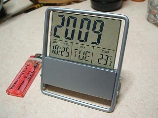
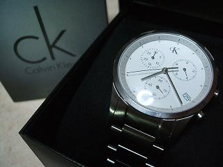

日々、想ふ
〜過去感じたことがつれづれと〜
（できるだけ最大化してお読みください）
日々、想ふ
今日は酒しか飲みませんでした。１０/３１
というわけで夜は飲んでました、タケユキです。
なので日記更新するの忘れて次の日の朝に更新中。
記憶なくすまで飲んだわけじゃないけど
風呂入りたいんで今日の更新はこれまでだったりします。
今日の朝：バイクのシートが朝露で・・。
今日はバイトありませんでした。１０/３０
今日は友達乗せてバイク屋めぐり、タケユキです。
さすがに寒いけダイヤモンドシティ行って
もこもこしたダウンジャケット買ってみた。
これでここ最近寒い俺の心もあったかだ。
今日のお前には関係ないじゃん：オグが部屋が散らかして帰った。
最近そういうのしかない。１０/２９
バイト行って飲んで、タケユキです。
最近鍛えるために毎日なんらかの形で酒を飲んでます。
今日はとりあえずビール２杯。
でもやっぱり顔は真っ赤。
・・寝ます。
今日の日記更新：朝４時半。
ほんと付き合いっていうか。１０/２８
さて、今期最初のサボリでした、タケユキです。
今日は２限に学校行った後、
友達が行きたいっていうから、
友達が行きたいっていうから、
しかたなく女子大の学祭に行ってきました。
こういう時バイクがあったら便利です。
ほんと乗り気じゃなかったんですよ俺は。
でも友達がどうしてもって言うからしかたなく。
しかし女子大ってのはどうしてこうも活気があるというか
元気があるというか、若さがあふれてた。
・・なんかキモい日記になってんなおい。
来週末はうちの学校の学祭。
来週の中ごろには関大の学祭があるとかどうとか。
関大の社会学部はかわいいとかどうとか。
また友達に誘われてしかたなく行くんだろうな。
しかたない、予定あけとくか。
今日の学祭：かわいい売り子が来る＝購入決定。
涙目かと思いきや。１０/２７
俺は基本的に寝る前にはケータイの電源を切ることが多いです、
それで朝８時に自動電源オンになるようセットしとくタイプです。
でもちょくちょくつけたままで寝たりすることももちろんあります、
そんな時に、特に夜４時とか５時(もうすでに夜じゃない)とかに
メールをもらうと以下のような事態が起こります。
無意識のうちにメールを開く→返信することなく寝る
→でも一度メール開いたから朝になっても気づかない
→メールを返さないまま月日が流れる。
だから俺にメールをするのは夜は１時まで、朝は８時以降の方が
返信率が高いですよ、前にメールもらったことに気づいたのが
メール受信した５日後だった記録があります、タケユキです。
ここ数日発表用のパワーポイントのスライドを家で作ってます。
題材がちょっと難しいもんでなかなか進まなくて困ってます、今もやってます。
今日塾のバイト行くまでにもやってたんだけど
途中までやって電源を切った外出。
俺はパソコンを切るときその時に実行中のソフトウェア、
ブラウザだったりメディアプレイヤーだったりを起動したまま
電源を落とします、めんどくさいし特に問題もないだろうし。
それでパワーポイントもつけたままで電源落とそうとしたのね、
そしたらシャットダウンしている最中にピロンッって音が聞こえたんすよ、
おいお前編集中のパワーポイント保存してねえだろっていう警告音。
でも知っての通り一度「電源を切る」ボタンを押したら
これでもかと終了処理をすすめてくれるウインドウズさんは
俺の「待って！」の言葉には微塵も反応せず電源をお切りになりました、
といっても俺のパソコンにはマイクはあっても
音声認識機能なんかついてないから当たり前なんだけど。
これからバイトだってのに崩れ落ちる俺、
刻々と迫り来る時間、
てーかもうスライド作る気なくしたよ。
グッと涙をこらえチャリこいでバイト行きましたよ、
偉い俺。
それからさっき帰ってきてどうせやりなおしだろうなーって
パソコンの電源つけたらパワーポイントが出てきて、
異常終了されたから途中までのバックアップを
とっといたんだけどどうする？って聞いてきた。
うっしゃあ！！！！！！
さすがウインドウズ！万歳バックアップ機能！！
よし続きやるかと思ってみたけど
そういやまだ半分しかできてなかったことに気づいて
またちょっとやる気ダウン、がんばれ、俺。
今日の教え子：あと２点だったのに。
涙目。１０/２６
ゼミ用のスライドが終わりません、タケユキでした。
久しぶりに高い買い物。１０/２５
眠いですよだって昨日何時間寝たのかいまいち分かりませんから、タケユキです。
今日は朝から吹田へひとっ走りして用事をすませ、
授業始まるまでにちょっと梅田で買い物をしてきました。
いきなりですが俺は腕時計というものを持っていませんでした。
正確には持ってたけどもう電池なくて動いてないって
いう表現が正しいんだろうけど。
大学入ってから時間はケータイを見ることで確認してました。
大学の教室ってのはなぜか壁掛け時計が常に故障中だったり
壁にかかってすらなかったりして
自分が時間を知りたければ自分で確認するしかないんですね。
学校のテストの時とかはケータイ見たらダメだったりするんで
テストが始まったら時間なんか気にせずに全力でやって
時間が分かろうが分かるまいが時間内にできる問題だったらできる、
できない問題だったら時間分かってても意味ないっていう
ちょっとアホなスタンスでやってきたわけだけど。
まぁ学校のテストはけっこうの科目であと１０分前になったら
教えてくれたりもしてたからまぁ腕時計がなくてもやっていけてたわけです。
それでも先週受けに入った資格試験とかの
あきらかに全部解けるわけねぇよ時間配分が勝負の分かれ目だろ、みたいな
そういう試験はやっぱり時間が分かるにこしたことがないから、
置時計持っていったんですよ、先週は。

席ついて、これを机において試験を受ける準備。
周りを見渡す、教室で置時計なの俺一人。
おいおいマジかよ他の人は全員腕時計なのかと思ったら
腕時計してない人もちらほら。
俺の後ろに座ってる人も腕時計してなかったっぽい。
そういう人達もけっこういてるんだな〜くらいで思って
一回トイレに席立って戻った時に気づいた、
後ろの人俺の置時計めっちゃ見てる。
俺はあなたのために持ってきたんじゃないんですけど？
まぁ見せてあげたけども。
とまぁ時間が分かるにしてもわざわざカバンに置時計入れて
試験受けに行くのはめんどくさいし、
高いのは社会人になってから買うとして
ちょっといいやつを買おうと思って今日梅田に行ったんです。
悩むこと１５分。ついに決定。

あ、今日の日記はこれを見せびらかしたいだけ。
今日のパワーポイント：なかなか進みません。
今日の一句。１０/２４
ひざの上
誰かの頭が
乗っている
女の子じゃなく
ごっつい男
今日の一句：ほんとなんでお前やねん、タケユキでした。
ふう。１０/２３
今日はバイトって帰ってきてまた焼酎、タケユキです。
あ、あと健康のために牛乳じゃなくて豆乳でカルーアミルク作って飲んでます、
というかそれはカルーアミルクなのかどうなのか。
今日の晩ご飯；炭水化物大量。
後半の文章ろれつがまわってないですね。１０/２２
今日は寝て起きてバイト、タケユキです。
いつもの休日のような過ごし方ですが
いつもと違うのはカウントダウンTVに鈴木あみ(今は漢字表記ですが)が
出てたこと、しかもそれを友達に教えられたことですかね。
その話題で思い出すのが高校の時に鈴木あみのファンクラブに入ってたって
ことですかね、はいそこひいたりしないように。
あのころの思いは純粋だったんですよ、
今の俺の心は汚れてしまったようだけど。
というわけで久しぶりに鈴木あみを見たあとは
お風呂、それから焼酎と昨日と同じコースをたどってます。
来週あたりに酒勝負を行う予定なので鍛えとかねばなりません。
それにしても焼酎二杯目あたりからくるこの強烈な睡魔はどうにからなんものか。
今日の日記：更新中顔真っ赤。
今日はいろいろあったけど。１０/２１
とりあえず今１３時半(２２日の)・・・、タケユキです。
昨日はバイト終わって飲んで、気づいたら寝てた。
焼酎は俺にとっては睡眠薬みたいなものな気がします。
とりあえずもうちょっと強くなりたいです。
それと昨日こっちに戻ってきた時に
バイクでフレンドリーの前を通ったんだけど
そこを通り過ぎる時にお店の中に知ってる友達がいた気がした。
一瞬通り過ぎただけだから確信はなかったんだけど
この辺であんな緑ジャージを着てるやつは他におらんしなー。
それで家帰って１時間ぐらい経ってまた出かけることになって
またフレンドリーの前を通ったら、まだいた緑ジャージ。
今日の日記：いやまぁただそれだけなんですけど。
ふと冷静に考えると。１０/２０
俺は冷静に考えると、というか今日はここには
ごく一般的な常識で照らし合わせるとかなりの度合いでなにも
ひどい、というか最低な男みたいです、タケユキです。書かないですよ
高校の時から口が軽いってのは周知の事実だったはずですが
今は頭も軽くなってしまってるのかもしれないです、
頭振るとカランカランいうかもしれん。
それを思った一番きっかけになったのは
昨日電話でしゃべった高校の時好きだった人からの
「あーあー、汚れてしまったねぇ」
でした。
さて何度目の反省だろう。
今日の夜：一人酒。
水曜は授業ないんですよね。１０/１９
今日、髪を切りました。
明日、スカウトとかされたらどうしよう、タケユキです。
それで話変わるんだけどうちの大学の学祭って
大学全体としての学祭の「まちかね祭」と医学部がやる「中ノ島祭」ってのと
ふたつあるじゃん？(知らん人は気にせず)
医学部ってのは豊中キャンパスじゃなくて吹田キャンパスにあるけど
中ノ島ってのは淀屋橋あたりにある地名のことで
俺は大学入っていままでの二年と半年、
医学部の学祭はそっち(淀屋橋のほう)であるんだと思ってました。
だから後輩が「中ノ島祭って吹田ですよね？」って聞かれた時に
「イヤ、違うで医学部やしべつもんやから違うとこでやるやろ」
と、アホな先輩風を吹かせたことをこの場を借りて謝罪をしようと思います。
すんませんでした！
今日の一日：学校行ってません。
深夜徘徊人。１０/１８
今日は今から(午前１時)から飲みに行きます、タケユキです。
今期の学校生活は授業がまだきつくなってない分
夏休みの延長みたいな感じがぬぐえなくて
生活が腐っていく感じをひしひしと実感します。
今日はついには一昨日炊いたご飯をジャーの中に放置してたら
白米から腐った臭いがしてきました。
いよいよ危ないですね、俺の生活。
今日の腐ったご飯：そのままゴミ箱へ。
Don't you wanna ride my bike。１０/１７
今日はしゃぶしゃぶを食べました、タケユキです。
それと夜久しぶりにバイク乗ったんだけど
めっちゃ寒い、特に田舎のほうに行くにつれ寒さが増す。
山の辺りに行くと泣きそうになるくらい。
もういいかげんシーズンオフっぽい風味がしました。
今日は久しぶりに深夜帰宅(午前３時半)、
熱い風呂、入ってくるかな。
今日の晩ご飯：食べ放題だったんですよ。
休みの日だけど。１０/１６
日曜なんだけど、タケユキです。
ちょっと個人的に資格の試験を受けてきました。
こういう試験ってのは試験は試験だけど
お金を払って自分から受けに行く試験なわけで
学校の試験と比べて多少やる気はあるものなんです。
ただ問題はそのモチベーションの維持。
試験は１０月、申し込みは８月。
８月、「よし、これから夏休みもあるし今から勉強すれば楽勝だ」
９月、「あと一ヶ月か、でも今から焦ってもなぁ」
１０月、
「やべーもう一週間しかねー」
つまりたいていの人はこうなるわけで。
二ヶ月前に５０００円ばかしの検定料を払っていながらも
目の前から５０００円が消えるわけじゃないから
「どーせ受けに入っても落ちるだけだから行くのやーめた」
と当日受けるのを諦めるのが３割程度。
というわけで俺が行った会場の教室には明らかに空席が目立つ。
何度も言うようだけどこの試験は学校のテストじゃないから
受けようが途中で諦めて帰ろうが自由なわけで。
試験開始前、すでに隣の席に人がいない。
午前試験終了後、前の人が姿を消し、
午後Ⅰ試験終了後、後ろの人が姿を消す。
午後Ⅱ試験終了後、残っているのは５割に満たない。
ここは練習が厳しすぎる部活かなにかですか。
今日の出来具合：淘汰される側っぽいです。